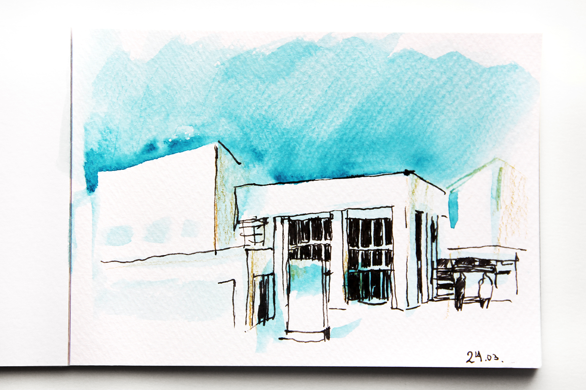
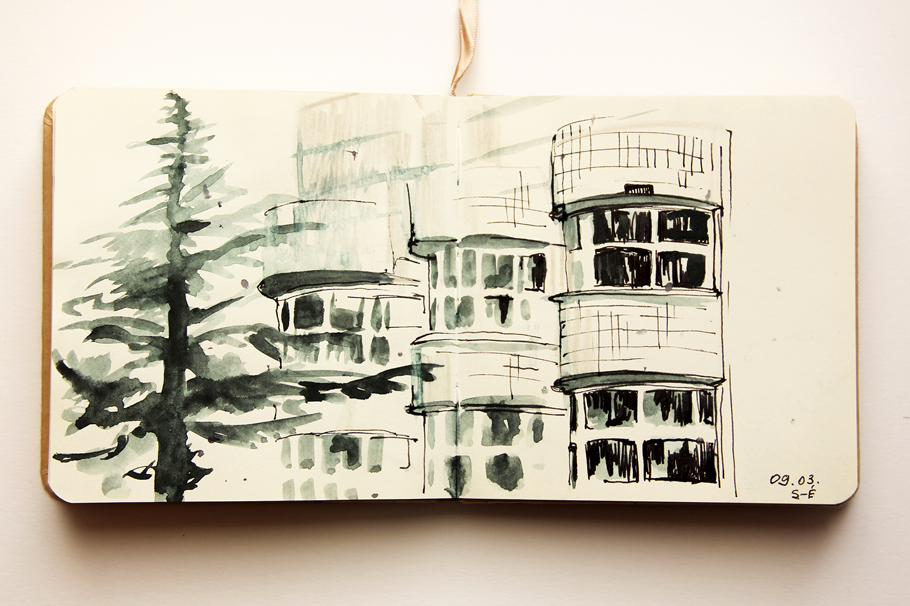

Médiathèque de Tarentaize
Bonjour ! Je m'appelle Ekaterina Zueva et je travaille aussi sous le pseudonyme Katya Evazu. Mon passe-temps préféré, c'est explorer les villes où je vis. J'aime m'immerger dans l'espace urbain et trouver des lieux qui me résonnent, des « endroits à moi ». Ce ne sont pas forcément les attractions les plus connues — même si souvent oui. J'aime aussi beaucoup les petits secrets, les recoins cachés dans la ville, des lieux qui ont une histoire à raconter. J'essaie de transmettre dans mon travail la magie que je vois, le caractère du lieu et mes propres émotions, et de partager tout cela avec le spectateur.
À Saint-Étienne, je suis arrivée récemment et mon adaptation est encore en plein cours. Il me tient donc beaucoup à cœur de trouver des lieux où je peux apprendre la langue et la culture, rencontrer du monde et me sentir soutenue. La médiathèque Tarentaize compte parmi ces lieux : c'est là que j'ai participé pour la première fois à un club de conversation et que je retrouve souvent un espace d'échange ; j'y découvre régulièrement de la littérature en français, on peut voir des films à la Cinémathèque, visiter des expositions ou simplement se reposer dans le calme en admirant la beauté du bâtiment. Pour moi, la médiathèque Tarentaize est un véritable lieu de force.

Ci-dessous, un peu de contexte sur ce lieu.

La Médiathèque Tarentaize est l'une des plus grandes bibliothèques de Saint-Étienne et un centre culturel important du quartier Tarentaize. Elle a été conçue par l'architecte danois Henning Larsen et réalisée en collaboration avec le bureau Arch de Saint-Étienne. Elle a ouvert en 1993.
On y lit bien sûr livres et magazines, on y écoute de la musique et on emprunte des documents à emporter ; on y trouve aussi une cinémathèque avec des projections régulières, des événements et des expositions, ainsi que l'espace numérique (L'espace numérique) et un fablab.